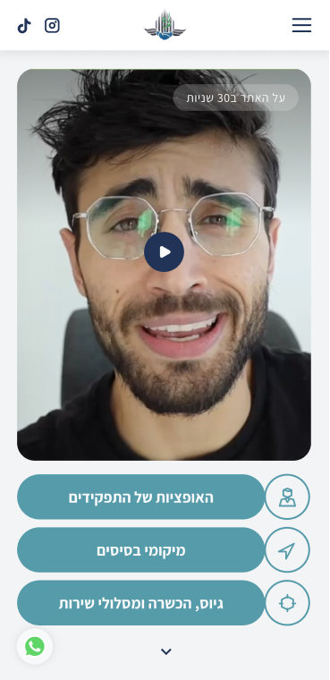
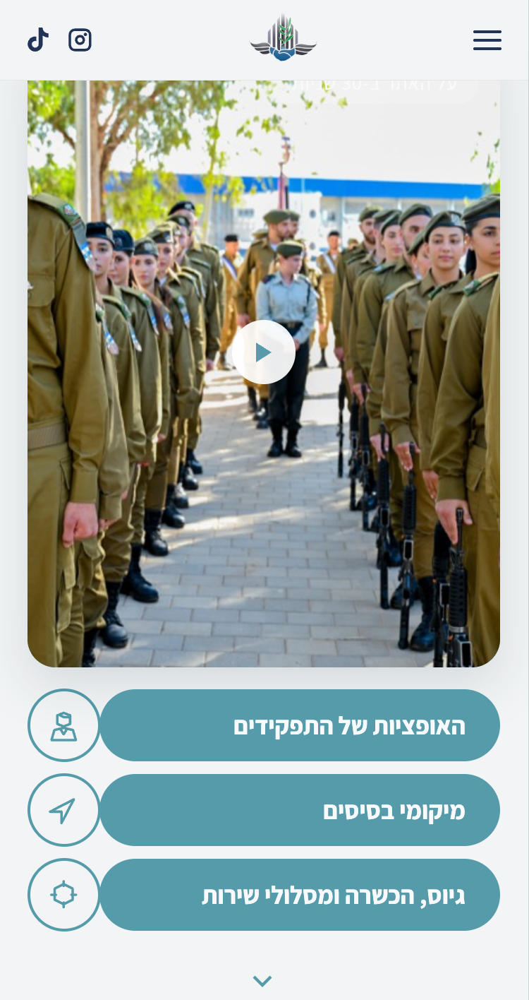
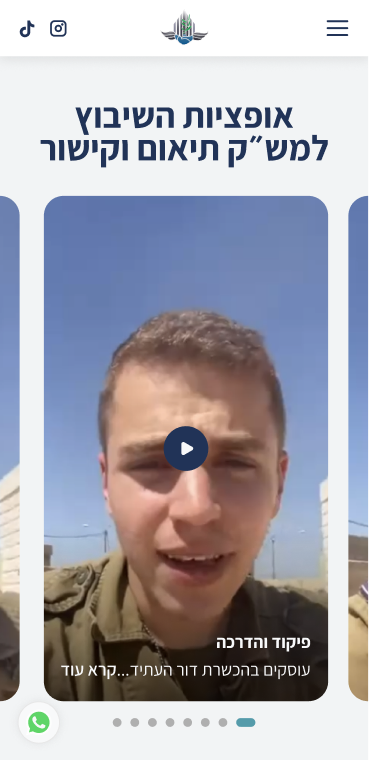
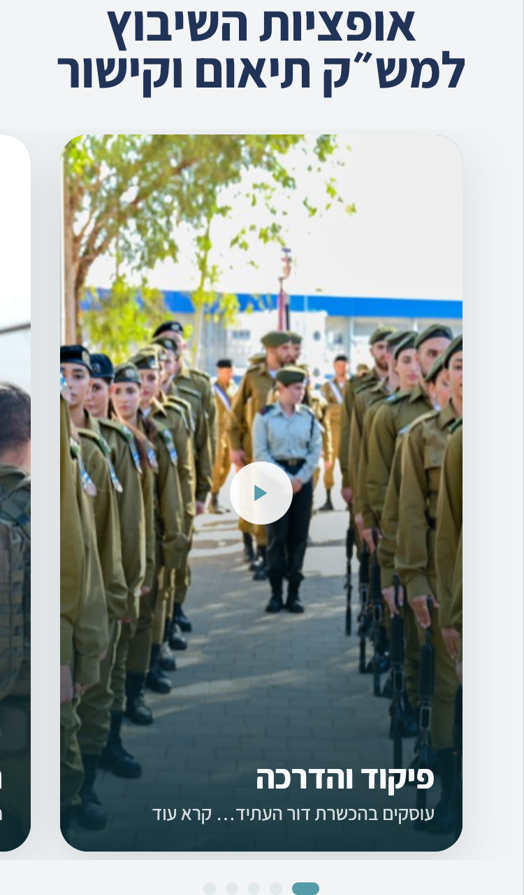
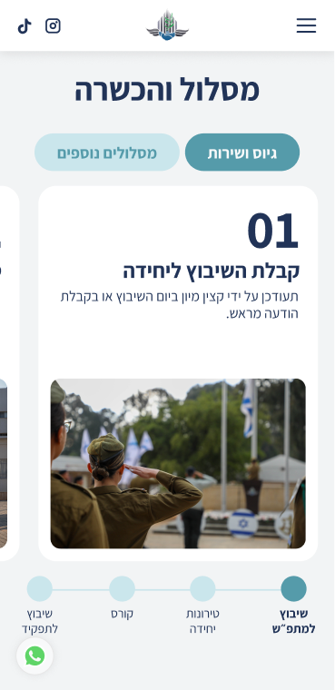
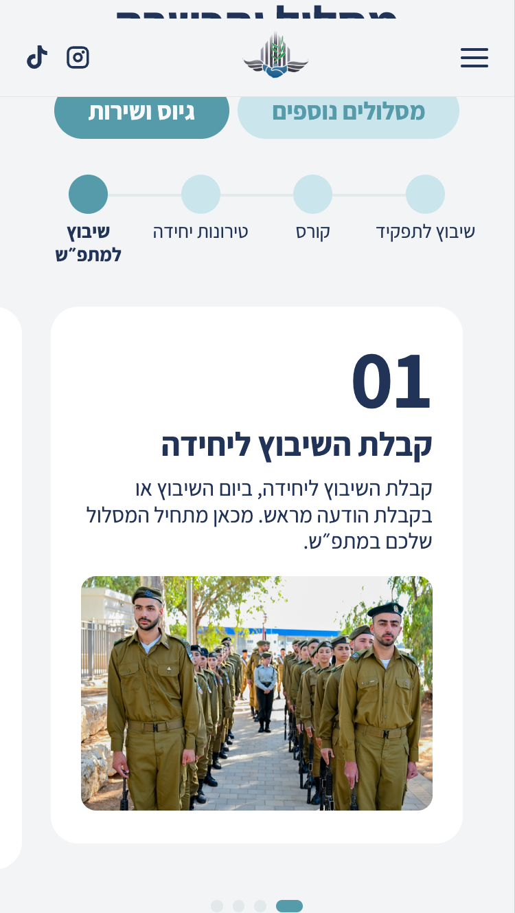
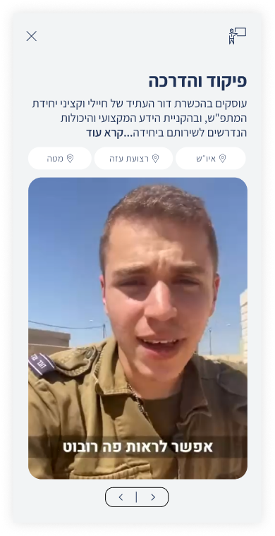
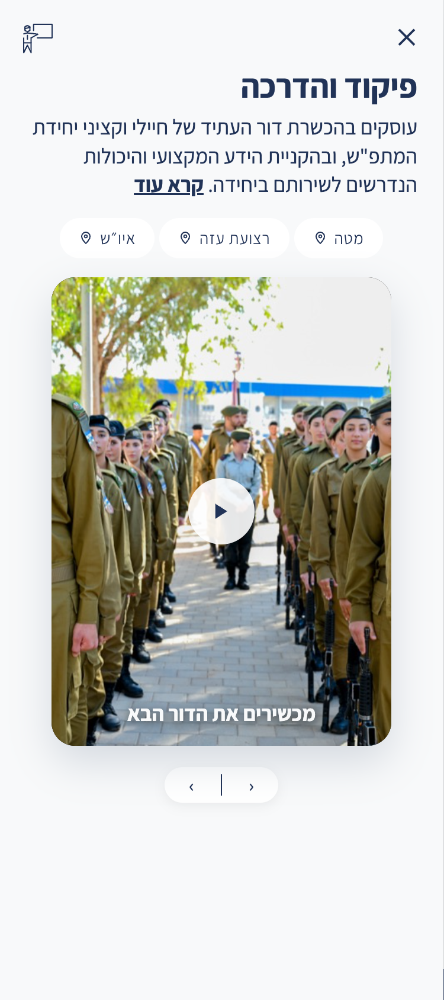

בדיקת QA להשוואה בין הפרוטוטייפים (HTML) לעיצוב בפיגמה. נבדק ברוחב מובייל, סקשן-אחרי-סקשן. לכל ממצא: צילום פיגמה מול צילום מהקוד, ואז «מה בפיגמה / מה בקוד / מה לתקן».
Figma 1519-7612

בפיגמה: העיגול עם האייקון בצד ימין של השורה, הבָּר משמאלו, והטקסט בבָּר ממורכז.
בקוד כרגע: העיגול עבר לצד שמאל, הבָּר מימין, והטקסט מיושר לימין.
לתקן: להפוך את סדר האלמנטים בשורה — אייקון בימין, בָּר משמאלו; וליישר את הטקסט בבָּר למרכז.
Figma 1519-7672

בפיגמה: הקרוסלה כוללת 8 תפקידים (8 עיגולי ניווט מתחת).
בקוד כרגע: רק 5 תפקידים (פיקוד והדרכה, תיאום אזרחי, מבצעים, תיאום ביטחוני, דוברות).
לתקן: להשלים ל-8 כמו בקונספט 2. חסרים: מידע ומחקר, קשרי חוץ, תשתיות.
מיקום העיגול הפעיל (המוארך מימין) — תקין. רק הכמות חסרה.
Figma 1733-12301

בפיגמה: סרגל השלבים (stepper) נמצא מתחת לכרטיס, ואין שורת נקודות נפרדת.
בקוד כרגע: ה-stepper נמצא מעל הכרטיס, ובנוסף יש שורת נקודות מתחת (כפילות שאין בפיגמה).
לתקן: להעביר את ה-stepper למתחת לכרטיס, ולהסיר את שורת הנקודות הנוספת.
סדר הכפתורים (גיוס ושירות פעיל מימין) וסדר שלבי ה-stepper (שיבוץ למתפ״ש מימין) — תקינים.
Figma 1671-11825

בפיגמה: כפתור הסגירה ✕ בצד שמאל למעלה, ואייקון התפקיד בצד ימין למעלה.
בקוד כרגע: הפוך — ה-✕ בצד ימין והאייקון בצד שמאל.
לתקן: להחליף צדדים — ✕ בשמאל למעלה, אייקון התפקיד בימין למעלה.
משני: בפיגמה האייקון הוא סמל דגל/מצגת; בקוד סמל פנקס/עיפרון — כדאי להתאים.